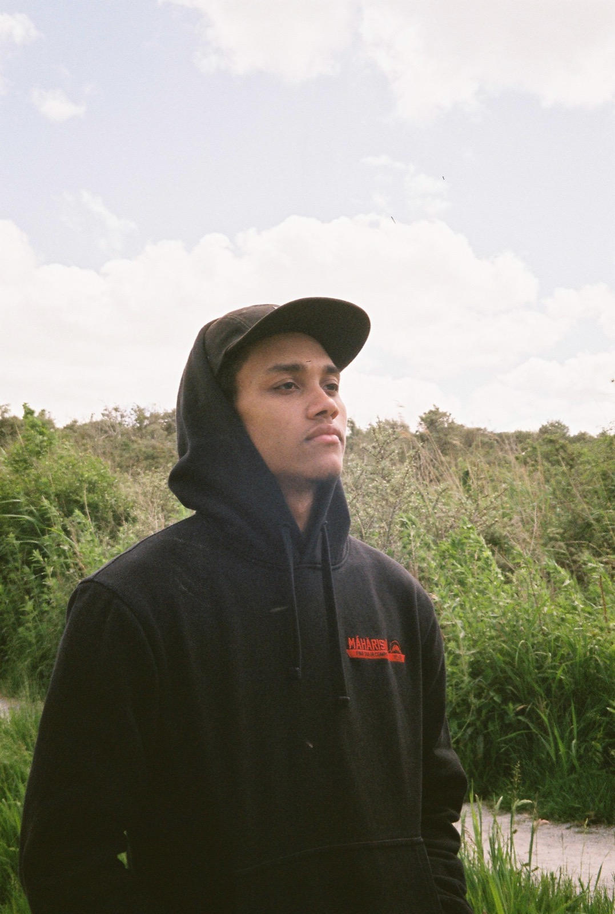

Mijn portfolio

Hallo, ik ben Hosea en ik ben 21 jaar oud. Ik kom uit Rotterdam en woon hier al heel mijn leven. Ik heb deze opleiding gekozen, omdat ik een nieuwe uitdaging wilde en uit mijn comfort zone wil gaan. Hiervoor heb ik twee jaar fysiotherapie gedaan en de HAVO afgerond. Mijn sterke punten zijn mijn open communucatie, flexibelheid, eerlijkheid en leergierigheid. Op dit portfolio kunnen jullie al de projecten zien waar ik aan heb gewerkt.